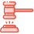

Консорціум
Ветеранських
Організацій Сходу
Надаємо всебічну підтримку ветеранам та їх сім’ям за допомогою програм, проектів та освіти.


ХАРКІВ ТА ХАРКІВСЬКА ОБЛАСТЬ
Консорціум було засновано
у липні 2020 року
Консорціум було засновано у липні 2020 року юр особу зарєєстровано 20 липня 2021 року. До засновників Консорціуму увійшли такі організації: ХОГО “Спілка ветеранів АТО”, ХОГО “Дружини ветеранів АТО”, ХОГО “Непереможні” та ГО “АСТ”. За партнерства та експертної підтримки Каразінського університету.

Всебічно сприяти створенню умов кращого повсякденного життя ветеранів та їх сімей.
Надавати всебічну підтримку ветеранам та їх сім’ям за допомогою програм, проектів та освіти.
Адвокація потреб ветеранської спільноти
Сприяння консолідації і координації зусиль ветеранів АТО/ООС, сімей загиблих, їх об’єднань у справі широкого, більш ефективного використання наявних можливостей у забезпеченні захисту своїх політичних, економічних, соціальних прав, створення для них належних умов для повноцінної реабілітації, працевлаштування та повернення до нормального життя, наданню оздоровчої, медичної, психологічної та моральної допомоги членам громадської організації, в першу чергу інвалідам АТО/ООС та сім'ям загиблих, а також сприяння консолідації і координації зусиль юридичних осіб, які надають допомогу ветеранам АТО/ООС;
-
01
Адвокація
Захисту прав та свобод ветеранської спільноти, членів їх сімей та найближчого оточення.
-
02
Cпівпраця
З університетами, науково дослідними установами, бізнесом та міжнародними експертними організаціями.
-
03
Здійснення
Гуманітарних зв’язків та професійних колоборацій з організаціями ветеранів війни України та іноземних держав.
-
04
Організація
Та проведення наукових, освітніх заходів та досліджень у сфері євро інтеграції, медицини, прав людини, громадянської активності реабілітації та реінтеграції ветеранської спільноти.
-
05
Сприяння
Створенню та забезпечення роботи та розвитку, експертний, дослідницький та дорадчий компонент у підтримці розвитку реабілітаційних центрів, спілок та організацій, які мають допомогти повернутися до нормального життя учасникам АТО/ООС, які зазнали фізичних та психологічних травм.
-
06
Розробка
Науково обгрунтованих пропозицій, впровадження та забезпечення аналітичного та дослідницького компоненту сприяння органам влади, місцевого самоврядування у розвитку ефективної соціальної політики стосовно ветеранів АТО/ООС та сімей загиблих.
Конструктивний
діалог
Взаємодія
Синергія
ОСНОВНА МЕТА ДІЯЛЬНОСТІ
-
Сприяти сталим перетворенням які призведуть до тривалих змін у різних сферах суспільства, основні принципи діяльності націлені на всебічну підтримку ветеранів, їх сімей, та громади в цілому.
-
Наш підхід ветерано-центрований, не продукувати сервіси та послуги, а виходити із потреб окремо взятого ветерана, піклуючись не тільки про послугу але й емоційне забарвлення яке може виникнути в процесі отримання цієї послуги.

“Ефективна послуга це – безбар’єрна послуга”
ОрганізаціЇ
Ми прагнемо створити дієву мережу ветеранських та сервісних організацій які надаватимуть послуги для ветеранської спільноти, відстоювати її інтереси та сприяти успішній реінтеграції у життя.
Сервіси
Сервіси та послуги які надаються державними структурами повинні бути орієнтованими на ветерана, враховувати зручні механізми отримання цих послуг інформування про послуги та доступ до послуг.
Співпраця
Співпраця з Консорціумом дозволить винайти кращі механізми взаємодії та забезпечити якісні послуги для ветеранів, які вже профінансовано платниками податків суспільства.
результат
Як результат плануємо створення регіональної сервісної карти для ветеранської спільноти та механізму взаємодії між різними стейкхолдерами та надаванням послуг
напрями ДІЯЛЬНОСТІ
освіта
бізнес
культура
агросектор
реабілітація
спорт
“Немає нічого більш марного, ніж ефективно виконувати роботу, яку робити взагалі не потрібно”
КОНСОРЦІУМ ВЕТЕРАНСЬКИХ ОРГАНІЗАЦІЙ СХОДУ
РОЗРОБКА
Розробка комплексної регіональної стратегії підтримки ветеранської спільноти та їх сімей
СПРИЯННЯ
Cприяння ефективній інтеграції ветеранської спільноти до інфраструктурного простору міста

ЗАЛУЧЕННЯ
Залучення до співпраці головних стейкхолдерів, розробка комплексу освітніх та консультативних сервісів для ветеранів та членів їх сімей.
наші Завдання
-
АНАЛІТИКА
-
ДОСЛІДЖЕННЯ
-

АДВОКАЦІЯ
-
ІНФОРМАЦІЙНА КАМПАНІЯ ТА КРОССЕКТОРАЛЬНА СПІВПРАЦЯ
наші Завдання
-
СПІВПРАЦЯ З УНІВЕРСИТЕТАМИ
-
ЗАЛУЧЕННЯ ГРОМАДСЬКИХ ОБ’ЄДНАНЬ
-
ЗАЛУЧЕННЯ ПРЕДСТАВНИКІВ БІЗНЕСУ
-
ЗАЛУЧЕННЯ МІЖНАРОДНИХ ПАРТНЕРІВ, ФОНДІВ, ДОНОРІВ
надання освіти
ОСВІТНІ ПРОГРАМИ
Єдиний комплекс освітніх компонентів, спланованих і організованих закладом загальної середньої освіти для досягнення учнями результатів навчання.
КУРСИ ПІДВИЩЕННЯ КВАЛІФІКАЦІЇ
Курси є прикладом об'єднання різних стейкхолдерів заради професійного зростання педагогів.
ПЕРЕКВАЛІФІКАЦІЯ, КОРОТКІ ПРОГРАМИ
Отриматуйте перспективну професію, затребувану і добре оплачувану. Або просто ту, що більше до душі.
надання освіти
-
01
Медична реабілітація.
-
02
Психологічна підтримка та реабілітація для ветеранів та членів їх сімей.
-
03
Розробка регіональної програми медичної реабілітації.
-
04
Залучення досвіду міжнародних партнерів.
-
05
Регіональна програма превенції суїцидальної поведінки та суїцидів серед ветеранів.
-
06
Створення мережі медичних закладів та аптек які готові надавати послуги за пільговими умовами або у форматі ProBono.
-
07
Програма підтримки членів сімей ветеранів які потрапили в кризову ситуацію або знаходяться в стані реабілітації.
-
08
Створення регіональної програми психологічної підтримки та супроводу ветеранів та членів їх сімей, створення мережі надавачів послуг.
КОНСУЛЬТУВАННЯ ТА ЕКСПЕРТИЗА
Сприяти створенню ветеранського бізнесу, працевлаштуванню, підтримка та супровід на всіх етапах.
Розвиток та підтримка незалежних медіа, запобігання дезінформації операціям впливу.
Міжнародна співпраця, партнерство, спільні проекти та програми.
ІНФОРМАЦІЙНІ КАМПАНІЇ ТА ІНШІ ЗАХОДИ
ПАТРІОТИЧНЕ ВИХОВАННЯ
СПРИЯННЯ СТВОРЕННЮ ІМІДЖУ ВЕТЕРАНА